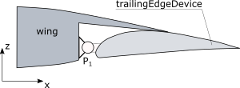
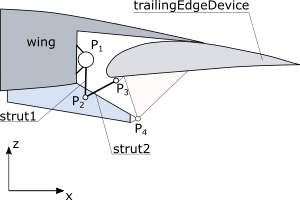
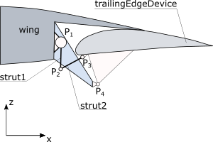
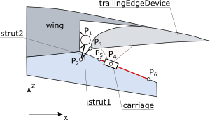
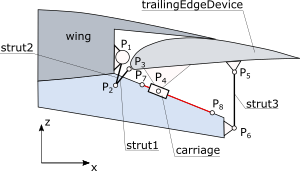
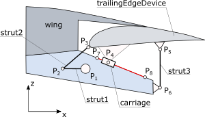

complexType · extension complexBaseType · all
Control surface tracks (mechnaical link between control surface and parent).
A track generally describes the structural connection between a control surface and a wing (or parent element). For example, a track can be a flap track, a revolute joint connecting an aileron or spoiler, or the kinematics of slats on a wing.
The spanwise position of the track is defined by etaPosition, which refers to the control surface dimensions.
The structural properties of the track (e.g. materials) are defined in trackStructure.
If an actuator is included into the the track, a reference is given in actuator.
The principal kinematic of the track is defined by setting the trackType and trackSubType. Please refer to the tables below for setting the trackType and trackSubType parameter. Note, those tables are not final - they are extended continuously.
| trackType | picture | description | trackSubType | picture | description |
| 1 |  | Revolute joint; no actuators; the revolute joint is on TED hinge line. | 1 | | Revolute attached at the wings rear spar and the TEDs front spar respectively the load carrying ribs of the TED. |
| 2 |  | Revolute joint; dropped hinge; linear or rotary actuator (subtype-dependent) included. The drive strut (if any) is defined as strut1. | 1 | | Box beam design as wing attachment; rotary drive attached at wing rear spar. |
| 2 |  | Wing attachment at wing rear spar; rotary drive attached at wing rear spar | |||
| 3 | Track mounted inside the fuselage at wing root. | ||||
| 3 |  | Upside-down, forward link in conjunction with a straight track on a fixed structure as aft. support; including rotary drive. | 1 | | Wing attachment using a box beam design where track is mounted; rotary actuator mounted at the wing rear spar. |
| 2 | Track mounted inside the fuselage at wing root. | ||||
| 4 |  | Straight and sloped track on a fixed structure as forward support and an upright link as aft. support; linear or rotary actuator (subtype-dependent) included. | 1 | | Wing attachment using a box beam design where the track is mounted; rotary actuator at the wing rear spar. |
| 2 |  | Wing attachment using a box beam design where track is mounted; rotary actuator mounted on the track. | |||
| 3 | Track mounted inside the fuselage at wing root. |
| Name | Type | Constraints | Use | Default | Description |
|---|---|---|---|---|---|
@externalDataDirectory | xsd:string | optional | Directory of the external data file | ||
@externalDataNodePath | xsd:string | optional | Path of the node inside the external data file | ||
@externalFileName | xsd:string | optional | Name of the external data file | ||
@uID | xsd:ID | required | UID |
| Name | Type | Constraints | OccurrenceHow often the element may appear at this place. The schema writes it as minOccurs and maxOccurs on the declaration. | Default | Description |
|---|---|---|---|---|---|
| allThe children below may appear in any order. Each may appear at most once. | |||||
etaPosition | etaIsoLineType | [1..1] required | Relative chordwise position of the track. Eta refers to the control surface. | ||
trackType | stringBaseType | 4 values | [1..1] required | Type of the track. Please refer to the remarks of the controlSrufaceTrackTypeType for details. | |
trackSubType | stringBaseType | 3 values | [0..1] optional | Type of the track. Please refer to the remarks of the controlSrufaceTrackTypeType for details. | |
actuator | trackActuatorType | [0..1] optional | Actuator | ||
trackStructure | trackStructureType | [0..1] optional | Structural parts | ||
cpacs/vehicles/aircraft/model/wings/wing/componentSegments/componentSegment/controlSurfaces/leadingEdgeDevices/leadingEdgeDevice/tracks/trackcpacs/vehicles/aircraft/model/wings/wing/componentSegments/componentSegment/controlSurfaces/trailingEdgeDevices/trailingEdgeDevice/tracks/trackcpacs/vehicles/aircraft/model/wings/wing/componentSegments/componentSegment/controlSurfaces/spoilers/spoiler/tracks/trackcpacs/vehicles/rotorcraft/model/wings/wing/componentSegments/componentSegment/controlSurfaces/leadingEdgeDevices/leadingEdgeDevice/tracks/trackcpacs/vehicles/rotorcraft/model/wings/wing/componentSegments/componentSegment/controlSurfaces/trailingEdgeDevices/trailingEdgeDevice/tracks/trackcpacs/vehicles/rotorcraft/model/wings/wing/componentSegments/componentSegment/controlSurfaces/spoilers/spoiler/tracks/trackcpacs/vehicles/rotorcraft/model/rotorBlades/rotorBlade/componentSegments/componentSegment/controlSurfaces/leadingEdgeDevices/leadingEdgeDevice/tracks/trackcpacs/vehicles/rotorcraft/model/rotorBlades/rotorBlade/componentSegments/componentSegment/controlSurfaces/trailingEdgeDevices/trailingEdgeDevice/tracks/trackcpacs/vehicles/rotorcraft/model/rotorBlades/rotorBlade/componentSegments/componentSegment/controlSurfaces/spoilers/spoiler/tracks/track| Type | Name |
|---|---|
controlSurfaceTracksType | track |